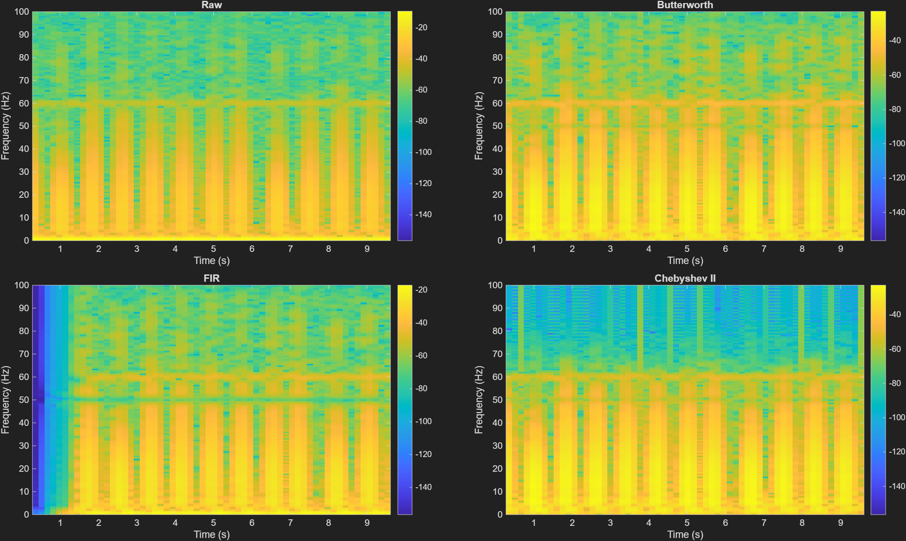

Figure 1: The Raw ECG signal before any denoising. You can see the slow baseline wander (drifting) and the high-frequency fuzziness (EMG/Powerline noise).
An ECG (Electrocardiogram) is a recording of the electrical activity of the heart. Electrodes on your skin pick up tiny voltage changes (millivolts) as the heart muscles contract and relax. To analyze this on a computer, the continuous physical signal must undergo SamplingSampling (Analog-to-Digital Conversion)In the real world, signals like sound or heartbeats are continuous (Analog). Computers can only understand numbers. Sampling is the process of taking "snapshots" or measuring the continuous signal at regular, discrete time intervals. and QuantizationQuantizationAfter sampling, Quantization assigns a specific numerical value to the signal's amplitude at that moment. Our ECG uses an 11-bit resolution, meaning it can represent the voltage using 2,048 different discrete levels..
A single heartbeat produces a characteristic waveform with labeled parts:
The QRS complex is the most important feature for diagnosis. It's sharp, fast, and contains frequenciesFrequency (Hz)Frequency measures how often something repeats over time, measured in Hertz (Hz). 1 Hz means 1 cycle per second. In our ECG, the heart beats roughly 1-2 times per second (1-2 Hz). up to about 30–40 Hz. The P and T waves are slower (0.5–10 Hz).
Our data comes from the MIT-BIH Arrhythmia Database:
Sampling frequency (fs): How many measurements per second. Our ECG signals are sampled at fs = 360 Hz, meaning the equipment measures the voltage 360 times per second.
Nyquist frequencyNyquist TheoremThe absolute maximum frequency a digital system can represent, which is exactly half the sampling rate.: Exactly half of fs. For us: 360/2 = 180 Hz. This is the highest frequency that our digital system can possibly represent. Any frequency above 180 Hz simply cannot exist in our digital data.
Why this matters: When we design filters in MATLAB, all frequencies must be expressed as a fraction of the Nyquist frequency. This is called normalized frequency. For example:
0.5 / 180 = 0.0027850 / 180 = 0.2778100 / 180 = 0.5556This is why you see 0.5/(fs/2) everywhere in the code — it's converting real Hz to normalized.
When electrodes record the heart, they also pick up three types of unwanted interference. We call this unwanted data NoiseNoiseAny unwanted interference that corrupts the signal we actually care about. In DSP, our primary job is isolating the "signal" from the "noise"..
Raw ECG → [High-Pass at 0.5 Hz] → [Notch at 50 Hz] → [Low-Pass at 100 Hz] → Clean ECG
kills baseline kills power kills EMG
wander line hum muscle noise
A digital filterDigital FiltersA mathematical algorithm applied to a digital signal to alter its frequency content. Think of it like a coffee filter: it lets the good stuff through while blocking the bad stuff. is a mathematical operation that takes your signal and produces a new list of numbers where certain frequencies have been amplified or suppressed.
Every digital filter is defined by a difference equation:
y[n] = b₀·x[n] + b₁·x[n-1] + b₂·x[n-2] + ...
- a₁·y[n-1] - a₂·y[n-2] - ...
x[n] = current input sampley[n] = current output sampleb coefficients = feedforward (they look at current and past inputs)a coefficients = feedback (they look at past outputs)An FIR filter only has b coefficients. The a side is just a₀ = 1 (no feedback). It only looks at the current and past N input values.
An IIR filter has both b and a coefficients. It looks at past outputs too, creating a recursive feedback loop.
Philosophy: "Maximally flat" in the passband. The magnitude response is as smooth as possible — no ripples, no bumps. It just gradually rolls off.
Philosophy: Allow controlled rippleRipplesSmall fluctuations or bouncing in the frequency response. in the stopband (the region you're blocking) to get a sharper transition than Butterworth. The passband remains completely flat so we don't distort the ECG.
A specialized 2nd-order IIR filter that creates a very narrow "notch" (dip) at exactly one frequency. We use a Q-factor of 30, meaning only about 50 ± 0.83 Hz is removed.

When designing FIR filters, abrupt truncation of coefficients creates ugly artifacts called Gibbs phenomenon (ringing oscillations). To fix this, we multiply the truncated impulse response by a window function that smoothly tapers the edges to zero. The Hamming window suppresses sidelobes to about -53 dB, which is excellent for our ECG needs.
Because IIR filters have non-linear phase (they distort the shape of the QRS complex), we use a trick in MATLAB called filtfiltZero-Phase Filtering (filtfilt)Filters the signal forward, then flips the signal and filters it again backward. The phase shifts perfectly cancel out, resulting in zero phase distortion!. It runs the signal forward, then backward through the filter. The opposite phase shifts cancel out, leaving zero phase distortion.
PSD tells you how much power (energy) your signal has at each frequency. The Welch methodWelch Method (PSD)A robust statistical way to estimate the power of a signal at different frequencies by breaking it into overlapping chunks and averaging them. is a specific way to estimate PSD by averaging many overlapping FFT segments to produce a smoother, more reliable estimate.
SNR tells you how much louder your desired signal is compared to the noise.
SNR = 10 × log₁₀(Power_signal / Power_noise) [in dB]
In our project, we achieved the following SNR improvements: